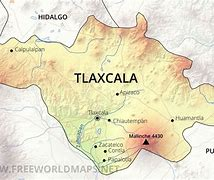
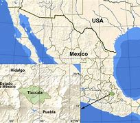

¿Que es Tlaxcala?

Tlaxcala, el estado más pequeño de México, está ubicado en el centro-oriente y limita con Puebla, Hidalgo y el Estado de México. Su nombre, que significa “lugar de pan o tortillas de maíz” en náhuatl, refleja la importancia del maíz en su cultura.
Históricamente, fue un señorío poderoso que resistió a los mexicas y se alió con Hernán Cortés durante la conquista. Hoy, Tlaxcala destaca por su rica identidad cultural, con carnavales, danzas, textiles y arquitectura colonial, además de su belleza natural, como el volcán La Malinche. Su economía se sustenta en la agricultura, la industria textil y el turismo.